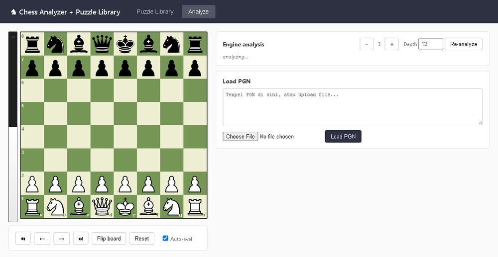
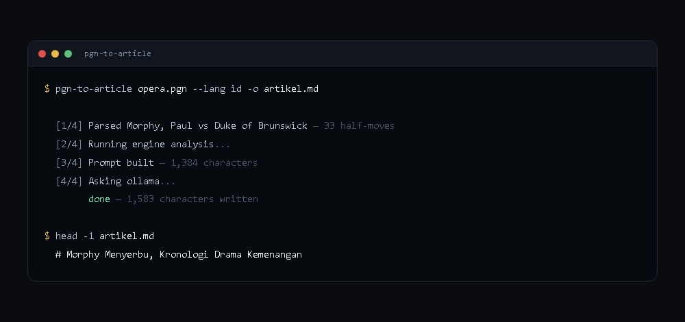
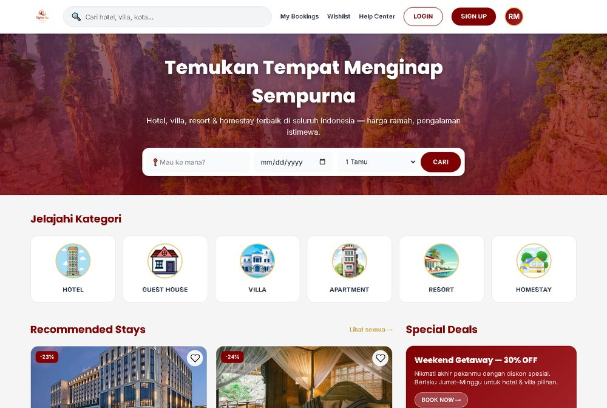
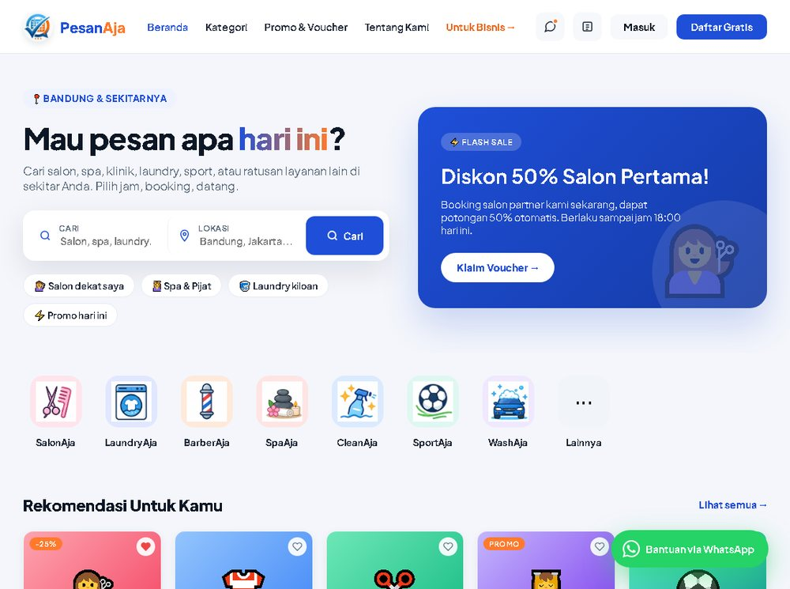

Proyek

$ python pgn_to_puzzles.py sample12.pgn --depth 10 -o puzzles.json
[ 3] L5 ply 42 c7c5 -> Qxh6 Rf7 Rxg7+ Rxg7 Bc4+ d5 Rxd5 Qxd5 Bxd5+ Kf8
[ 5] L4 ply 59 d6g6 -> Bxc2+ Ke3 Bd4#
[ 6] L3 ply 23 g5e4 -> Nxe4 Nxe4 Qxe4 c3
...
Wrote 16 puzzles -> puzzles.json
Alat baris perintah yang membaca partai catur, mencari langkah yang mengubah posisi
seimbang menjadi kalah, lalu menjadikannya puzzle taktis. Program ini mengenali 26
pola taktik yang berbeda, seperti garpu kuda, pin, dan berbagai bentuk skakmat.
Seluruh deteksinya saya tulis sendiri tanpa memakai pustaka pihak ketiga.
Bagian yang paling lama saya pikirkan adalah cara menentukan tingkat kesulitan.
Awalnya saya pakai panjang solusi, tapi itu keliru: rangkaian panjang berisi
langkah gamblang tetap mudah, sementara satu langkah tenang yang brilian tetap sulit.
Ada juga papan analisa berbasis web untuk menelaah satu partai langkah demi langkah,
dengan evaluasi mesin di tiap posisi.
Bot moderasi grup WhatsApp untuk komunitas catur. Arsitekturnya dipisah:
gateway (Node.js) hanya mengurus koneksi, brain
(C# .NET 10) memegang seluruh logika. Dengan begitu aturan moderasi bisa diuji
tanpa perlu terhubung ke WhatsApp sama sekali.
Tantangan terbesarnya bukan pada logika moderasi, melainkan pada batasan WhatsApp
itu sendiri. Setelah bot terkena pembatasan 403 akibat volume pesan yang terlalu
tinggi, saya menerapkan tiga penanganan: batas 50 pesan per jam untuk seluruh akun,
jawaban puzzle diubah dari gambar papan menjadi teks agar ukuran kiriman jauh lebih
kecil, dan jeda sambung-ulang bertingkat ketika koneksi terputus.

Membaca satu partai, menandai momen kritisnya dengan Stockfish, lalu menuliskannya
menjadi artikel. Bagian yang menentukan ada di penyusun prompt: ia merangkai konteks,
yaitu siapa pemainnya, pembukaan apa, dan di langkah mana posisi berubah, bukan sekadar
menempelkan notasi partai.
Alat ini saya pisahkan dari sistem yang lebih besar, sekaligus dipindahkan dari
.NET Framework ke .NET 10. JavaScriptSerializer diganti
System.Text.Json lewat lapisan kompatibilitas yang mempertahankan bentuk
data lama, sehingga 2.000 baris kode di bawahnya tidak perlu disentuh.

Tugas kuliah. Prototipe antarmuka pemesanan penginapan seperti hotel, villa, dan
resort. Tiga
belas layar dan 53 fungsi JavaScript, seluruhnya dalam satu berkas HTML tanpa dependensi.
Versi pertamanya berukuran 31,6 MB karena semua gambar saya tanam sebagai base64;
satu barisnya saja 25 MB, dan GitHub menolaknya saat diunggah. Setelah gambarnya
dikeluarkan jadi berkas terpisah lalu dikompres, tinggal 2,7 MB.

Tugas kuliah juga. Prototipe aplikasi pemesanan layanan seperti salon, spa, dan
laundry. Dua puluh halaman yang saling terhubung, mobile-first dengan tata letak
desktop tersendiri, dan bisa dipasang sebagai PWA.
Tiap halaman punya blok <style> sendiri, dan lama saya kira itu
banyak pengulangan. Setelah diukur ternyata cuma 2% yang benar-benar duplikat.
Sisanya memang khusus per halaman, jadi yang saya satukan hanya 37 token desain.